Yazılım Mühendisliği
Vize: Pazartesi, 2 Kasım · 14:30 · A305, A201, A203
Sommerville, Software Engineering 8. baskı, Bölüm 1–7 (kitap s.3–168). Her bölümde kitabın sayfa sayfa konu anlatımı (213 sayfalık Türkçe notun tamamı), kısa özet, mutlaka bilinecekler, hocanın sözleri ve notlar ayrı sekmelerde, İngilizce ve Türkçe cevaplı sınav soruları ve 18 soruluk test var. Hocanın vize notuna göre son konu olan Mimari Tasarım da (hafta 10 slaytları) ayrı sayfada.
Vize
Hocanın söyledikleri
Vizede ne çıkacak?
Hocanın derste verdiği soru tipleri: sistemlere organizasyon stili ve kontrol stratejisi önermek, kullanıcı ve sistem gereksinimleri. Örnek cevapları ve aynı kalıpta gelebilecek sorular.
Aç → Son konu · hafta 10Mimari Tasarım
Organizasyon stilleri (depo, istemci-sunucu, katmanlı), modüler ayrıştırma, kontrol stilleri ve referans mimariler. Slayttaki şemalarla.
Aç → 20 sistemSistemi gör, stili seç
Bir sistem tarifi gelir; hangi organizasyon stilini ya da kontrol modelini önereceğini seçersin, nedenini görürsün.
Başla →Bölümler
Tekrar
Bütün bölümlerden
Orijinal kaynaklar
PDF'ler yeni sekmede açılır
Türkçe vize notları
Kitabın 1–7. bölümleri sayfa sayfa: açıklama, terim sözlüğü, olası sorular ve mini testler. 213 sayfa.
Sosyo-teknik ve kritik sistemler
Proje yönetimi
Yazılım gereksinimleri
Gereksinim mühendisliği süreçleri
Ders kitabının kendisi telif hakkı nedeniyle siteye konmadı. Notlarda ve sorularda kitap sayfa numaraları verildi.
Yazılım Mühendisliğine Giriş
Introduction
Yükleniyor…
1.1Yazılım ve yazılım mühendisliği
- 1968 yazılım krizi (software crisis): entegre devreli güçlü donanım büyük yazılımları mümkün kıldı, gelişigüzel geliştirme yetmedi → geç, pahalı, güvenilmez, bakımı zor projeler. "Software engineering" terimi bu konferansta doğdu.
- Yazılım = programlar + belgeler + yapılandırma verisi. Yazılım soyut ve elle tutulamaz; fiziksel sınırı olmadığı için kolayca aşırı karmaşıklaşır.
- Ürün türleri: Generic (açık pazarda herkese; spec'i geliştirici kontrol eder, ör. kelime işlemci) · Customised / bespoke (tek müşteri; spec'i müşteri kontrol eder, ör. hava trafik kontrolü).
- YM: sistem tanımlamasından bakıma kadar yazılım üretiminin tüm yönleriyle ilgilenen mühendislik disiplini. Bilgisayar bilimi = teori; sistem mühendisliği = donanım + yazılım + süreç, YM onun bir parçası.
1.1Süreç, model, yöntem, maliyet
- 4temel süreç faaliyeti: SpecificationDevelopmentValidationEvolution
- Süreç modeli: sürecin tek bir bakış açısından basitleştirilmiş gösterimi → 3 workflow · dataflow (activity) · role/action.
- 3genel paradigma: Waterfall (ayrı, sıralı aşamalar; her aşama signed-off) · Iterative (faaliyetler iç içe) · CBSE (hazır bileşenleri birleştir).
- Maliyet: ≈ %60 geliştirme, %40 test. Waterfall'da en pahalısı entegrasyon ve test. Uzun ömürlü sistemde evrim maliyeti geliştirmenin 3–4 katı. Generic üründe test çok pahalı (çok sayıda yapılandırma).
- Yöntemin 4bileşeni: system model descriptions · rules · recommendations · process guidance. "Hiçbir nesnenin 7'den fazla alt nesnesi olmamalı" bir recommendation'dır.
- CASE (Computer-Aided Software Engineering): diyagram editörleri, analiz modülleri, rapor ve kod üreticileri.
1.1İyi yazılım ve zorluklar
- 4temel özellik M-D-E-U: Maintainability · Dependability (reliability + security + safety) · Efficiency · Usability.
- 3zorluk H-D-T: Heterogeneity (farklı makine, ağ, eski sistemler) · Delivery (kaliteden ödün vermeden hızlı teslim) · Trust (kullanıcı güveni).
1.2Mesleki ve etik sorumluluk
- 4mesleki sorumluluk: Confidentiality · Competence · Intellectual property rights · Computer misuse.
- ACM/IEEE etik kodu 8ilke: Public (1 numara: kamu yararı) · Client & Employer · Product · Judgment · Management · Profession · Colleagues · Self (hayat boyu öğrenme).
- Etik ikilemler: yönetimle anlaşmazlık, emniyet-kritik sistemde eksik test, askeri sistemlerde çalışma.
Yükleniyor…
Yükleniyor…
Sosyo-teknik Sistemler
Socio-technical systems
Yükleniyor…
2.1Sistem ve özellikleri
- Sistem: bir hedef için birlikte çalışan, birbiriyle ilişkili bileşenlerin amaçlı topluluğu; parçaların toplamından fazlası.
- Teknik sistem = donanım + yazılım (süreç yok, ör. cep telefonu) · Sosyo-teknik = + insanlar, işletim süreçleri, kurumsal politikalar; dış kısıtlardan (yasalar) etkilenir.
- Sosyo-teknik sistemin 3özelliği: emergent properties · nondeterministic (insan yüzünden aynı girdi → farklı çıktı) · başarısı kurumsal hedeflere bağlı.
- Emergent properties: tek parçaya değil bütüne ait. Functional (bisiklet → ulaşım aracı) · non-functional (volume, reliability, security, repairability, usability).
- Güvenilirliği etkileyen 3faktör: hardware · software · operator reliability. Yazılım aşınmaz, hataları genelde geçicidir.
2.2Sistem mühendisliği süreci
- 7aşama (şelale modelini etkiledi):
Requirements definitionSystem designSub-system developmentSystem integrationInstallationEvolutionDecommissioning
- Yazılım sürecinden 2fark: limited scope for rework (baz istasyonu yeri) · interdisciplinary involvement.
- Gereksinim tanımında 3tür: abstract functional requirements · system properties · sistemin sergilememesi gerekenler. Wicked problem: tanımı ancak çözülürken netleşen problem (deprem planlaması).
- Tasarım 5adım: Partition requirementsIdentify sub-systemsAssign requirementsSpecify functionalityDefine interfacesArayüzler belirlenince alt sistemler paralel geliştirilir. Blok diyagram: kutu = alt sistem, ok = ilişki.
- Alt sistem: COTS (hazır ticari ürün). Entegrasyon: incremental > big bang (hepsi aynı anda bitmez; hatanın yeri kolay bulunur).
- Evrim pahalı, 4neden: iş + teknik analiz · alt sistemler birbirini etkiler · tasarım gerekçeleri kayıtsız · yapı zamanla bozulur.
2.3–2.4Kurum, insan ve legacy sistemler
- 3insan faktörü: process changes · job changes (vasıfsızlaştırma, statü kaybı) · organisational changes (politik güç).
- 3kurumsal süreç: procurement · development · operational. Principal contractor işi alır, sub-contractor'lara dağıtır.
- Legacy system: eski teknolojili ama iş için kritik sosyo-teknik sistem. 6bileşen: hardware · support software · application software · application data · business processes · business policies & rules (katmanlı model).
Yükleniyor…
Yükleniyor…
Kritik Sistemler
Critical systems
Yükleniyor…
3.1Kritik sistem türleri
- 3tür: safety-critical (kimya fabrikası) · mission-critical (uzay aracı navigasyonu) · business-critical (banka hesap sistemi).
- Dependability neden en önemli, 3: güvenilmez sistem reddedilir · arıza maliyeti sistemden büyük olabilir · veri kaybı.
- Arıza kaynakları: donanım · yazılım · insan operatör (bugün en büyük tek neden). Örnek sistem: insülin pompası (available + reliable, asla aşırı doz yok).
3.2–3.3Dependability, availability, reliability
- 4boyut A-R-S-S: Availability (istendiğinde hizmet) · Reliability (tanımlandığı gibi hizmet) · Safety (felaketsiz çalışma) · Security (saldırıya karşı koruma). Ek: repairability · maintainability · survivability · error tolerance.
- Maliyet güvenilebilirlikle üstel artar; %100 güvenilir olduğu kanıtlanamaz.
- Reliability: belirli ortamda ve sürede arızasız çalışma olasılığı. Availability: bir anda çalışır olma olasılığı. A yılda 1 kez arızalanıp 3 günde, B ayda 1 kez arızalanıp 10 dakikada açılıyor → A daha reliable, B daha available.
- Zincir: Human errorSystem faultSystem errorSystem failureKusur her zaman hataya, hata her zaman arızaya dönüşmez.
- Güvenilirliği artırmanın 3yolu: fault avoidance · fault detection & removal · fault tolerance. Mills: bilinen hataların %60'ını gidermek güvenilirliği yalnızca %3 artırdı.
3.4Safety
- Primary (gömülü kontrolcü, doğrudan zarar) ve secondary (ilaç veritabanı, dolaylı zarar) safety-critical yazılım.
- Reliable ≠ safe, 3neden: spec eksik · donanım arızası beklenmedik girdi üretir · operatörün tek başına doğru ama tehlikeli girdisi (yerdeki uçağın iniş takımını kaldırma).
- Terimler: accident (mishap) · hazard (kazaya yol açabilecek durum) · damage · hazard severity · hazard probability · risk.
- Emniyetin 3yolu: hazard avoidance (iki düğmeli kesme makinesi) · hazard detection & removal (basınç tahliye vanası) · damage limitation (motor yangın söndürücü).
3.5Security
- Terimler: exposure · vulnerability (istismar edilebilir zayıflık) · attack (istismarın kendisi) · threat (zarar potansiyeli) · control (ör. şifreleme).
- Saldırının 3zararı: denial of service · corruption of programs or data · disclosure of confidential information.
- Güvenliğin 3yolu: vulnerability avoidance (dış ağa bağlama) · attack detection & neutralisation (virüs tarayıcı) · exposure limitation (düzenli yedek).
Yükleniyor…
Yükleniyor…
Yazılım Süreçleri
Software processes
Yükleniyor…
4.1Süreç modelleri
- 4temel faaliyet: specification · design & implementation · validation · evolution. 3genel model: waterfall · evolutionary · CBSE (birbirini dışlamaz). Formal geliştirme: Cleanroom (kusur testi yok).
- Waterfall (Royce 1970), 5aşama:
Requirements analysis & definitionSystem & software designImplementation & unit testingIntegration & system testingOperation & maintenanceArtı: her aşamada belge, diğer mühendislik modellerine uyum. Eksi: inflexible partitioning. Ne zaman: gereksinimler iyi anlaşılmış ve değişmeyecekse. En uzun aşama: işletim ve bakım.
- Evolutionary: exploratory development (müşteriyle keşfet, son sistemi teslim et) · throwaway prototyping (gereksinimi anla, at). Sorunlar: süreç görünür değil · kötü yapı. ≤ 500.000 satırlık sistemler için iyi.
- CBSE: Requirements specificationComponent analysisRequirements modificationSystem design with reuseDevelopment & integrationSystem validationArtı: daha az kod, maliyet ve risk, hızlı teslim. Eksi: gereksinimden ödün, evrim kontrolü kaybı.
4.2Süreç yinelemesi
- Incremental delivery: en öncelikli hizmetler önce; artım ≤ 20.000 satır. 4avantaj: müşteri beklemez · ilk artımlar prototip olur · başarısızlık riski düşer · öncelikli hizmetler en çok test edilir. Uç örneği: XP (pair programming).
- Spiral (Boehm 1988): her döngü bir aşama, 4sektör: Objective settingRisk assessment & reductionDevelopment & validationPlanningDiğerlerinden farkı: riskin açıkça tanınması. Ana risk arayüzse prototipleme, entegrasyonsa waterfall seçilebilir.
4.3Süreç faaliyetleri
- RE 4aşama: Feasibility studyElicitation & analysisSpecificationValidation
- Tasarım 6faaliyet: architectural design · abstract specification · interface design · component design · data structure design · algorithm design.
- Yapılandırılmış yöntem modelleri 5: object · sequence · state transition · structural · data-flow.
- Testing ≠ debugging: test kusurun varlığını gösterir, debugging yerini bulup düzeltir (locate → design repair → repair → retest).
- Test 3aşama: Component (unit)SystemAcceptanceAlpha: tek müşteriye özel sistemde kabul testi. Beta: ürünü satıştan önce potansiyel müşterilere vermek.
- Geliştirme ile bakım ayrımı giderek anlamsız: yazılım sürekli evrilir.
4.4–4.5RUP ve CASE
- RUP: 3bakış (dynamic = fazlar, static = iş akışları, practice = iyi uygulamalar). 4faz I-E-C-T: Inception (business case)Elaboration (mimari, plan, riskler)ConstructionTransition
- İş akışları: 6 temel (business modelling, requirements, analysis & design, implementation, test, deployment) + 3 destek (configuration & change mgmt, project mgmt, environment). Fazlar iş akışlarına bağlı değil → her iş akışı her fazda aktif olabilir.
- 6iyi uygulama: iteratif geliştir · gereksinimleri yönet · bileşen tabanlı mimari · UML ile görsel modelle · kaliteyi doğrula · değişiklikleri kontrol et.
- CASE: beklenenden az (~%40) iyileşme; 2sınırlayıcı: yaratıcı tasarım işi · ekip işi. Destek genişliğine göre: tools · workbenches · environments (Fuggetta).
Yükleniyor…
Yükleniyor…
Proje Yönetimi
Project management
Yükleniyor…
5.1Yönetim faaliyetleri
- Yazılım yönetimi neden farklı, 3: ürün intangible · standart süreç yok · büyük projeler tek seferlik.
- 6faaliyet: proposal writing · planning & scheduling · costing · monitoring & reviews · personnel selection & evaluation · report writing & presentations. (İyi programcı ≠ iyi yönetici.)
- İdeal ekip kurulamayabilir: bütçe, uygun kişi yok, kurum içi kısıt. Ekipte en az bir deneyimli kişi olmalı.
5.2Planlama
- Diğer plan türleri: quality · validation · configuration management · maintenance · staff development.
- Planlama yinelemelidir; tahminler kötümser olmalı, contingency eklenmeli.
- Proje planının 7bölümü: introduction · project organisation · risk analysis · hardware & software resources · work breakdown · project schedule · monitoring & reporting.
- Milestone: faaliyetin tanınabilir bitiş noktası, resmi çıktı (yönetime rapor). Deliverable: müşteriye teslim edilen sonuç. Deliverable'lar milestone'dur, tersi şart değil. "%80 bitti" milestone olmaz.
5.3Zamanlama
- 5adım: Identify activitiesIdentify dependenciesEstimate resourcesAllocate peopleCreate charts
- Faaliyet en az 1 hafta, en fazla 8–10 hafta. Tahmine önce %30, sonra %20 ekle.
- Bar chart / Gantt: kim, ne zaman. Activity network: bağımlılıklar. Critical path: ağdaki en uzun yol = minimum süre; üzerindeki gecikme projeyi geciktirir.
5.4Risk yönetimi
- 3kategori (örtüşebilir): project (deneyimli tasarımcının ayrılması) · product (satın alınan bileşenin çalışmaması) · business (rakibin yeni ürünü).
- Süreç: Risk identificationRisk analysisRisk planningRisk monitoring
- 6risk türü: technology · people · organisational · tools · requirements · estimation.
- Olasılık bantları: very low <%10 · low %10–25 · moderate %25–50 · high %50–75 · very high >%75. Etki: catastrophic · serious · tolerable · insignificant.
- 3strateji: avoidance (olasılığı azalt) · minimisation (etkiyi azalt) · contingency plans (B planı). Risk göstergesi örneği: düşük moral → people risk.
Yükleniyor…
Yükleniyor…
Yazılım Gereksinimleri
Software requirements
Yükleniyor…
6.1Gereksinim türleri
- User requirements: doğal dil + diyagram, soyut; müşteri ve yöneticiler için. System requirements: ayrıntılı, kesin, sözleşmeye girebilir; mimar ve geliştiriciler için.
- 3tür: functional (hizmetler, girdilere tepki) · non-functional (hizmetler üzerindeki kısıtlar, genelde sistemin bütünü) · domain (uygulama alanından gelir).
- Belge complete (her hizmet tanımlı) ve consistent (çelişki yok) olmalı; büyük sistemde pratikte imkânsız. "Appropriate viewers" gibi ifadeler imprecision yaratır.
- NFR neden daha kritik: karşılanmazsa bütün sistem kullanılamaz (uçak güvenilirlik sertifikası alamaz).
- NFR sınıflandırması (Şekil 6.3):
- Product: usability · efficiency (performance, space) · reliability · portability
- Organisational: delivery · implementation · standards
- External: interoperability · ethical · legislative (privacy, safety)
- Goal ("kolay kullanılmalı") test edilemez; verifiable NFR ölçütle yazılır ("2 saat eğitimden sonra günde ≤ 2 hata"). Ölçütler: speed · size · ease of use · reliability (MTTF) · robustness · portability.
- Domain gereksinimi sorunu: alan dilinde yazılır, uzmanlar "açık" bilgiyi atlar.
6.2–6.4Gereksinim yazmak
- User req. doğal dil sorunları 3: lack of clarity · requirements confusion · requirements amalgamation.
- Yazım kuralları 4: standart format · shall (zorunlu) / should (istenen) · önemli kısmı vurgula · jargondan kaçın. + rationale.
- System req. doğal dil sorunları: ambiguity · overflexibility · lack of modularisation. Gösterimler 4: structured natural language · design description languages · graphical notations (use-case, sequence) · mathematical specifications.
- Standart form 7öğe: function · inputs (source) · outputs (destination) · requires · action · pre-condition / post-condition · side effects. Sequence diagram yukarıdan aşağı okunur (ATM).
- Arayüz tanımlama 3tür: procedural interfaces (API) · data structures · representations of data (bit sırası).
6.5Gereksinim belgesi (SRS)
- 5kullanıcı: system customers · managers · system engineers · test engineers · maintenance engineers.
- IEEE/ANSI 830-1998: IntroductionGeneral descriptionSpecific requirementsAppendicesIndex
Yükleniyor…
Yükleniyor…
Gereksinim Mühendisliği Süreçleri
Requirements engineering processes
Yükleniyor…
7.1Süreç ve fizibilite
- RE süreci: feasibility → elicitation & analysis → specification → validation, üstüne requirements management; spiral olarak da gösterilir.
- Fizibilite 3soru: kurum hedeflerine katkı? mevcut teknoloji, maliyet ve takvimle yapılabilir mi? mevcut sistemlerle entegre olur mu? 2–3 hafta, sonunda rapor.
7.2Gereksinim çıkarma ve analiz
- Stakeholder: sistemden doğrudan ya da dolaylı etkilenen herkes. Çıkarma 5nedenle zor: ne istediklerini bilmezler · kendi terimleri ve örtük bilgi · çatışan istekler · politik faktörler · değişen iş ortamı.
- Spiral 4faaliyet: DiscoveryClassification & organisationPrioritisation & negotiationDocumentation
- Viewpoints 3: interactor (ATM: müşteri, hesap veritabanı) · indirect (banka yönetimi, güvenlik) · domain (bankalar arası standartlar). Hiyerarşi halinde düzenlenir.
- Interview: closed (hazır sorular) / open (gündem yok). Alan bilgisi için zayıf. İyi görüşmeci: açık fikirli + konuşmayı başlatan.
- Scenario 5öğe: başlangıç varsayımı · normal akış · ne ters gidebilir · eşzamanlı faaliyetler · bitiş durumu.
- Use-case (UML): aktör = çöp adam, etkileşim = elips; bir use-case bir senaryolar kümesidir (Fowler). Interactor için iyi, NFR ve alan için zayıf.
- Ethnography: çalışma ortamında gözlem. Bulduğu 2tür: insanların gerçekte nasıl çalıştığı · işbirliği ve farkındalık. Kurumsal/alan gereksinimi için uygun değil.
7.3Gereksinim geçerleme
- Neden önemli: gereksinim hatası tasarım/kod hatasından çok daha pahalıya düzelir.
- 5kontrol V-C-C-R-V: validity · consistency · completeness · realism · verifiability.
- 3teknik: reviews (+ verifiability, comprehensibility, traceability, adaptability) · prototyping · test-case generation.
7.4Gereksinim yönetimi
- Değişme nedenleri: çatışan öncelikli çeşitli kullanıcılar · parayı ödeyen kullanıcı değil · iş ve teknik ortam değişir.
- Enduring (kararlı, temel faaliyetten) · volatile 4: mutable · emergent · consequential · compatibility.
- Planlama kararları: requirements identification · change management process · traceability policies · CASE support. 3izlenebilirlik: source · requirements · design; matriste D = depends, R = zayıf ilişki.
- Değişiklik yönetimi: Problem analysis & change specificationChange analysis & costingChange implementationAcil değişiklikte önce kodu değiştirip belgeyi unutma tuzağı.
Yükleniyor…
Yükleniyor…
Terim sözlüğü
| İngilizce | Türkçe | Anlamı | Bölüm · s. |
|---|
Karışık test
126 sorudan rastgele 20 soru.
Sayılı listeler
Sayıyı gör, listeyi saymaya çalış.
| Sayı | Liste | Öğeler | B · s. |
|---|
Vizede ne çıkacak?
Hoca derste vizenin nasıl olacağını anlattı ve örnek sorular verdi. Notun kendisi en üstte. Altında her soru tipinin nasıl cevaplanacağı ve tam örnek cevaplar var; önce kendin yaz, sonra örnek cevapla karşılaştır.
Hocanın notu (defterden)
- Vize: 5 soru, klasik. Tanım sorusu yok.
- Son konudan: 3–4 tane sistem verip "Bu sistemler için hangi organizasyonel stilleri önerirsiniz?"
- 3–4 tane sistem (gerçek zamanlı, dağıtık, sıralı işlem): "Hangi sistem için hangi kontrol stratejisini önerirsiniz, neden?"
- "Kullanıcı gereksinimlerini ve sistem gereksinimlerini tanımlayınız. Bir yazılım geliştirme sürecinde neden ikisinin de ayrı ayrı tanımlanması gerektiğini açıklayınız."
- Ya da: "Sadece biri kullanılarak sistem geliştirilebilir mi?" → Geliştirilemez, ikisinin okuyucuları farklı.
Bu ne demek?
- 5 sorunun hepsi yazılı. Test yok, her soruda 1–2 paragraf yazacaksın.
- "Tanım yok", "X nedir?" diye tek başına sorulmayacak demek. Ama tanımı bilmeden cevap yazılmıyor: üçüncü soru zaten "tanımlayınız" diye başlıyor. Puan tanımdan sonraki "neden" kısmında.
- İlk iki soru tipi Mimari Tasarım konusundan geliyor (hocanın 10. hafta klasöründeki ch11 slaytları). Sitedeki 1–7. bölümlerde bu konu yoktu; ayrı sayfa olarak ekledim.
- Üçüncü tip Bölüm 6'dan (Yazılım Gereksinimleri). Bölüm 4'te de alıştırma 4.5 olarak geçiyor.
- Kalan 2 soru için hoca bir şey söylemedi. Aynı kalıpta (öner, karşılaştır, neden) gelebilecek soruları sayfanın sonuna koydum.
Klasik soruya cevap kalıbı
- Önerini ilk cümlede söyle: "Bu sistem için istemci-sunucu stilini öneririm."
- Stili bir cümleyle anlat. Tanım sorulmasa da cevabın temeli bu.
- Nedenini sistemin bir özelliğine bağla: "çünkü bu sistemde kullanıcılar farklı yerlerden ağ üzerinden bağlanıyor; istemci-sunucu da veriyi ve işlemi ağdaki bilgisayarlara dağıtmak için var."
- Bir zayıf yanı ya da alternatifi söyle: "Ortak veri modeli olmadığı için veri alışverişi verimsiz olabilir." Bu, ezberlemediğini, anladığını gösterir.
- Kitaptaki örnek sistemi an: CASE araç seti (depo), film ve fotoğraf kütüphanesi (istemci-sunucu), sürüm yönetim sistemi (katmanlı).
Bazı sistemlerde iki stil de savunulabilir. Hocanın sorusunda "neden?" var; puanın çoğu gerekçeden gelir. Gerekçen sistemin bir özelliğine dayanıyorsa cevabın doğru sayılır.
Soru tipi 1Sistemlere organizasyon stili önermek
Organizasyon stili (system organisation), sistemi yapılandırmak için kullanılan temel stratejidir. Slayta göre yaygın 3stil var: ortak veri deposu (shared data repository), ortak hizmetler ve sunucular, yani istemci-sunucu (client-server), soyut makine, yani katmanlı model (abstract machine / layered).
Ortak veri deposu Repository
Sistemde şunu görünce seç
Alt sistemler çok büyük miktarda ortak veriyi paylaşıyor. Veriyi bir alt sistem üretiyor, diğerleri kullanıyor.
Neden?
Büyük veriyi paylaşmanın en verimli yolu. Alt sistemler verinin nasıl üretildiğiyle ilgilenmez. Yedekleme, güvenlik gibi yönetim işleri merkezde tek yerden yapılır. Paylaşım modeli depo şeması olarak yayınlanır.
Zayıf yanı
Herkes tek veri modelinde anlaşmak zorunda; bu kaçınılmaz olarak bir uzlaşmadır. Veri modelini değiştirmek zor ve pahalı. Alt sisteme özel yönetim politikası olamaz. Verimli dağıtmak zor.
Örnek
CASE araç seti (kitap). Kitaba göre komuta-kontrol sistemleri, yönetim bilgi sistemleri ve CAD sistemleri de böyle.
İstemci-sunucu Client-server
Sistemde şunu görünce seç
Veri ve işlem ağdaki farklı bilgisayarlara dağılmış; kullanıcılar farklı yerlerden bağlanıyor; birbirinden bağımsız hizmetler var.
Neden?
Dağıtık sistem modelidir: veriyi dağıtmak kolay. Ağı etkin kullanır, daha ucuz donanım yetebilir. Yeni sunucu eklemek ya da var olanı yükseltmek kolay.
Zayıf yanı
Ortak veri modeli yok, alt sistemler veriyi farklı düzenler, veri alışverişi verimsiz olabilir. Yönetim her sunucuda tekrarlanır. Merkezi isim ve hizmet kaydı yok, hangi sunucunun ne verdiğini bulmak zor.
Örnek
Film ve fotoğraf kütüphanesi: katalog, video, resim ve web sunucuları (kitap).
Katmanlı Layered
Sistemde şunu görünce seç
Sistem seviye seviye kuruluyor, her katman üstündekine hizmet veriyor. Taşınabilirlik, katman değiştirebilme, artımlı geliştirme ya da güvenlik önemli.
Neden?
Bir katmanın arayüzü değişince sadece komşu katman etkilenir. Katmanlar artımlı geliştirilebilir. Alttaki katmanı (ör. işletim sistemi) değiştirmek üsttekileri bozmaz. Güvenlik için kritik varlıklar en içteki katmana konur.
Zayıf yanı (kitaptan)
Sistemi katmanlara ayırmak her zaman kolay değil. Üstten gelen bir istek birçok katmandan geçtiği için performans düşebilir.
Örnek
Sürüm yönetim sistemi (kitap). Ağlarda OSI referans modeli.
Gerekçeyi güçlendiren slayt: mimari ve sistem özellikleri
Sistemde öne çıkan fonksiyonel olmayan gereksinimi söyleyip mimariyi ona bağlarsan gerekçe çok güçlenir:
- Performans önemliyse: kritik işlemleri bir yerde topla, iletişimi azalt; küçük parçalar yerine büyük bileşenler kullan.
- Güvenlik (security) önemliyse: katmanlı mimari, kritik varlıklar iç katmanlarda.
- Emniyet (safety) önemliyse: emniyetle ilgili özellikleri az sayıda alt sistemde topla.
- Kullanılabilirlik (availability) önemliyse: yedek bileşenler ve hata toleransı mekanizmaları koy.
- Bakım kolaylığı (maintainability) önemliyse: küçük, değiştirilebilir bileşenler kullan.
Büyük sistemler çoğu zaman tek stile uymaz (slayt 9). Ör. bir web uygulaması dışarıdan istemci-sunucu, sunucunun içi katmanlı olabilir. Cevabın sonuna bunu bir cümleyle eklemek artı puan getirir.
Aşağıdaki sistemler için hangi organizasyon stilini önerirsiniz? Nedenini açıklayınız.
- Tasarım editörü, kod üreteci, tasarım analizcisi ve rapor üretecinden oluşan bir yazılım geliştirme ortamı.
- Öğrencilerin evden internet üzerinden katalog aradığı, film ve fotoğraf indirdiği bir dijital kütüphane.
- Farklı işletim sistemlerine taşınabilmesi gereken bir sürüm (versiyon) yönetim sistemi.
- Poliklinik, laboratuvar, eczane ve faturalama bölümlerinin aynı hasta kayıtlarını kullandığı bir hastane sistemi.
Örnek cevabı göster
a) Ortak veri deposu. Bütün araçlar aynı büyük proje verisi üzerinde çalışıyor: tasarım editörünün ürettiği modeli analizci kontrol ediyor, kod üreteci koda çeviriyor, rapor üreteci rapora döküyor. Veriyi bir araç üretip diğerleri kullandığı için en verimli paylaşım yolu ortak depodur. Araçlar birbirini tanımak zorunda değildir, sadece depo şemasını bilir; yeni bir araç eklemek kolaydır. Yedekleme ve güvenlik depoda tek yerden yapılır. Zayıf yanı: bütün araçlar tek veri modelinde anlaşmak zorundadır, model değişirse hepsi etkilenir. Bu, kitaptaki CASE araç seti örneğidir.
b) İstemci-sunucu. Kullanıcılar farklı yerlerden internet üzerinden bağlanıyor ve katalog, video, fotoğraf birbirinden bağımsız hizmetler. Her hizmet ayrı bir sunucuda durur (katalog, video, resim ve web sunucusu), öğrencilerin bilgisayarları istemcidir. Veriyi ağa dağıtmak kolaydır; büyük video dosyaları kendi sunucusunda tutulur. Talep artınca yeni sunucu eklemek ya da birini yükseltmek diğerlerini etkilemez. Zayıf yanı: merkezi bir hizmet kaydı olmadığı için hangi sunucunun ne verdiğini bulmak zordur. Bu, kitaptaki film ve fotoğraf kütüphanesi örneğidir.
c) Katmanlı (soyut makine) model. En altta işletim sistemi katmanı, üstünde veritabanı katmanı, onun üstünde nesne yönetimi, en üstte yapılandırma (sürüm) yönetimi katmanı olur. Her katman sadece altındaki katmanın hizmetlerini kullanır. Bir katmanın arayüzü değişince sadece komşu katman etkilendiği için, sistemi başka işletim sistemine taşırken en alttaki katmanı değiştirmek yeter. Katmanlar artımlı geliştirilebilir. Zayıf yanı: üstten gelen istek bütün katmanlardan geçtiği için performans düşebilir. Bu, kitaptaki sürüm yönetim sistemi örneğidir.
d) Ortak veri deposu. Bütün bölümler aynı büyük veriyi, hasta kayıtlarını paylaşıyor: laboratuvarın girdiği sonucu poliklinik görüyor, eczane reçeteyi, faturalama yapılan işlemleri okuyor. Kayıtların tek yerde olması tutarlılığı sağlar. Hasta verisi gizli olduğu için güvenliğin, yetkilendirmenin ve yedeklemenin merkezde tek yerden yönetilmesi büyük avantajdır. Zayıf yanı: bölümler tek veri modelinde anlaşmak zorundadır. Bölümler farklı binalarda kendi verilerini tutuyorsa istemci-sunucu da savunulabilir; o zaman gerekçe "veri ve işlem ağa dağılmış" olur.
Soru tipi 2Kontrol stratejisi önermek
Kontrol stilleri (control styles) alt sistemler arasındaki kontrol akışıyla ilgilenir; sistemin parçalara nasıl ayrıldığından farklı bir konudur. 2ana yaklaşım var, her birinin 2modeli:
- Merkezi kontrol (centralised control): bir alt sistem bütün kontrolden sorumludur, diğerlerini başlatır ve durdurur. Modelleri: çağır-dön (call-return) ve yönetici (manager).
- Olay tabanlı kontrol (event-based control): her alt sistem başka alt sistemlerden ya da sistemin ortamından gelen olaylara cevap verir. Modelleri: yayın (broadcast) ve kesme güdümlü (interrupt-driven).
Çağır-dön Call-return · merkezi
Neden?
Kontrol, alt yordam hiyerarşisinin en üstündeki ana programdan başlar ve yukarıdan aşağıya iner; çağrılan yordam bitince kontrol çağırana döner. Sıralı sistemde işler sırayla yapılır, aynı anda çalışan süreç yoktur. Slayt: "sıralı sistemlere uygulanabilir".
Bedeli
Dışarıdan gelen beklenmedik olaylara cevap vermek zor. Sıralı sistemde buna ihtiyaç yok.
Yönetici Manager · merkezi
Neden?
Bir bileşen diğer süreçlerin başlatılmasını, durdurulmasını ve koordinasyonunu yönetir. Slayt: "eşzamanlı sistemlere uygulanabilir"; sıralı sistemde bir case ifadesiyle de yazılabilir. Slayttaki gerçek zamanlı sistem kontrolü şekli bu modeldir.
Bedeli
Bütün kontrol tek denetleyiciden geçer. Olayları kendisi yoklayarak bulur, bu yüzden cevabı kesme kadar hızlı değildir.
Yayın Broadcast · olay tabanlı
Neden?
Olay bütün alt sistemlere yayınlanır, işleyebilen alt sistem işler. Slayt: ağdaki farklı bilgisayarlarda çalışan alt sistemleri birleştirmede etkili. Alt sistemler ilgilendikleri olaylara kaydolur. Kontrol politikası olay ve mesaj işleyicide değildir, her alt sistem kendisi karar verir; yeni alt sistem eklemek kolaydır.
Bedeli
Alt sistemler bir olayın işlenip işlenmeyeceğini ya da ne zaman işleneceğini bilemez.
Kesme güdümlü Interrupt-driven · olay tabanlı
Neden?
Olaya hızlı cevap şart. Bilinen kesme türleri vardır, her biri için bir işleyici (handler) tanımlıdır. Her tür bir bellek adresine bağlıdır; donanım anahtarı kontrolü doğrudan o işleyiciye aktarır, olay sıra beklemez.
Bedeli
Hızlı cevap verir ama programlaması karmaşık, doğrulaması (validation) zordur.
Şemaları (çağır-dön, gerçek zamanlı sistem kontrolü, seçici yayın, kesme vektörü) Mimari Tasarım sayfasında görebilirsin.
Gerçek zamanlı bir sistem, dağıtık bir sistem ve sıralı işlem yapan bir sistem için hangi kontrol stratejisini önerirsiniz? Nedenini açıklayınız.
Örnek cevabı göster
Sıralı işlem yapan sistem (ör. maaş bordrosu basan toplu iş): merkezi kontrol, çağır-dön modeli öneririm. Bu modelde kontrol, alt yordam hiyerarşisinin en üstündeki ana programdan başlar ve yukarıdan aşağıya alt yordamlara geçer; çağrılan yordam işini bitirince kontrol çağırana geri döner. Sıralı sistemde işler belli bir sırayla, birbiri ardına yapılır ve aynı anda çalışan süreç yoktur. Bu yüzden kontrolün tek noktadan yukarıdan aşağıya akması en doğal çözümdür. Akış öngörülebilir olduğu için sistemi analiz etmek ve test etmek de kolaydır. Zayıf yanı dış olaylara cevap vermenin zor olmasıdır, ama sıralı sistemde böyle bir ihtiyaç yoktur.
Gerçek zamanlı sistem (ör. arabada ABS ya da hava yastığı): olay tabanlı kontrol, kesme güdümlü model öneririm. Gerçek zamanlı sistemde dış olaylara belirli bir süre içinde, çok hızlı cevap vermek şarttır. Bu modelde bilinen kesme türleri ve her tür için tanımlı bir işleyici vardır; her kesme türü bir bellek adresiyle eşleşir ve donanım anahtarı kontrolü doğrudan o işleyiciye aktarır. Olay, bir sırayı beklemeden, olduğu anda işlenir. Bedeli: programlaması karmaşık ve doğrulaması zordur. Zaman kısıtı o kadar sıkı değilse merkezi yönetici modeli de kullanılabilir: bir sistem denetleyicisi sensör, aktüatör ve hesaplama süreçlerini başlatır, durdurur ve koordine eder.
Dağıtık sistem (ör. ağdaki farklı bilgisayarlarda çalışan alt sistemler): olay tabanlı kontrol, yayın modeli öneririm. Bu modelde bir olay bütün alt sistemlere yayınlanır ve o olayı işleyebilen alt sistem işler. Alt sistemler ilgilendikleri olaylara önceden kaydolur; olay olunca kontrol onu işleyebilecek alt sisteme geçer. Bu model ağdaki farklı bilgisayarlarda bulunan alt sistemleri birleştirmede etkilidir. Kontrol politikası mesaj işleyiciye gömülü olmadığı için alt sistemlerin birbirini tanıması gerekmez ve ağa yeni bir alt sistem eklemek kolaydır. Zayıf yanı: bir alt sistem, yayınladığı olayın işlenip işlenmeyeceğini ya da ne zaman işleneceğini bilemez.
Soru tipi 3Kullanıcı ve sistem gereksinimleri
| Kullanıcı gereksinimleri User requirements | Sistem gereksinimleri System requirements | |
|---|---|---|
| Ne anlatır | Sistemin hangi hizmetleri vereceğini ve hangi kısıtlar altında çalışacağını, üst düzeyde ve soyut olarak. | Sistemin fonksiyonlarını, hizmetlerini ve çalışma kısıtlarını ayrıntılı ve kesin olarak. Kullanıcı gereksinimlerinin genişletilmiş hâlidir. |
| Nasıl yazılır | Doğal dil ve diyagramlarla. Jargon ve tasarım ayrıntısı yok, sadece sistemin dış davranışı. | Yapılandırılmış doğal dil, tablolar, sequence diagram gibi daha teknik gösterimler. Belgeye functional specification da denir. |
| Kim okur Şekil 6.2 | Müşteri yöneticileri, son kullanıcılar, müşteri mühendisleri, yüklenici yöneticileri, sistem mimarları. | Son kullanıcılar, müşteri mühendisleri, sistem mimarları, yazılım geliştiriciler. |
| Ne işe yarar | Müşteriyle ne istendiği konusunda anlaşmak. İhale için soyut tutulur ki farklı yükleniciler farklı çözüm önerebilsin (Davis). | Tasarımın başlangıç noktasıdır. Sözleşmenin parçası olabilir, bu yüzden eksiksiz ve tutarlı olmalıdır. |
| Örnek Şekil 6.1, LIBSYS | "Sistem, telif hakkı lisans kurumlarının istediği bütün verileri takip etmelidir." | Belge isteyen kişiye bilgilerini kaydeden bir form gösterilir; formlar 5 yıl saklanır; kullanıcıya, materyal adına ve tedarikçiye göre indekslenir; bütün isteklerin kaydı tutulur; yazar ödünç hakkı olan materyallerin bilgisi her ay lisans kurumlarına gönderilir. |
Akılda kalsın: restoran örneği
Kullanıcı gereksinimi (müşterinin dili): "Vejetaryen yemek seçeneği olsun."
Sistem gereksinimi (aşçının dili): "Menüde en az 3 etsiz ana yemek olmalı, etle aynı tavada pişirilmemeli, menüde yeşil yaprak simgesiyle işaretlenmeli."
Biri patron ve müşteri için, diğeri işi yapacak kişi için. Patron aşçının listesini okumak istemez, aşçı da "vejetaryen seçenek olsun"dan ne pişireceğini çıkaramaz.
Kullanıcı gereksinimlerini ve sistem gereksinimlerini tanımlayınız. Bir yazılım geliştirme sürecinde neden ikisinin de ayrı ayrı tanımlanması gerektiğini açıklayınız.
Örnek cevabı göster
Kullanıcı gereksinimleri, sistemin kullanıcılarına hangi hizmetleri vereceğini ve hangi kısıtlar altında çalışacağını anlatan, doğal dil ve diyagramlarla yazılmış üst düzey, soyut ifadelerdir. Teknik bilgisi olmayan müşteri ve kullanıcıların anlayabileceği şekilde yazılır; sistemin sadece dış davranışını anlatır, tasarım ayrıntısı içermez.
Sistem gereksinimleri, sistemin fonksiyonlarını, hizmetlerini ve çalışma kısıtlarını ayrıntılı olarak tanımlar; kullanıcı gereksinimlerinin genişletilmiş hâlidir. Bu belgeye functional specification da denir. Kesin olmalı ve tam olarak neyin gerçekleştirileceğini söylemelidir. Tasarımın başlangıç noktasıdır ve alıcı ile geliştirici arasındaki sözleşmenin parçası olabilir.
Örnek (LIBSYS): "Sistem, telif hakkı lisans kurumlarının istediği bütün verileri takip etmelidir" bir kullanıcı gereksinimidir. Bu tek cümle birkaç sistem gereksinimine açılır: isteği kaydeden form, formların 5 yıl saklanması, indeksleme, istek kaydı ve aylık rapor.
Neden ayrı ayrı tanımlanmalı?
1) Okuyucuları farklıdır. Kullanıcı gereksinimlerini müşteri yöneticileri, son kullanıcılar, müşteri mühendisleri, yüklenici yöneticileri ve sistem mimarları okur; bunlar sistemin nasıl yapılacağıyla ilgilenmez. Sistem gereksinimlerini son kullanıcılar, müşteri mühendisleri, sistem mimarları ve yazılım geliştiriciler okur; bunların sistemin tam olarak ne yapacağını bilmesi gerekir. Yöneticiler sadece kullanıcı gereksinimlerini, geliştiriciler sadece sistem gereksinimlerini okur.
2) Ayrıntı seviyeleri farklıdır. İkisi tek belgede karışırsa teknik olmayan okuyucu, sadece teknisyenleri ilgilendiren ayrıntılarda boğulur. Geliştirici de soyut bir cümleden ne yapacağını çıkaramaz.
3) Amaçları farklıdır. Kullanıcı gereksinimleri müşteriyle anlaşmak ve ihaleye çıkmak için kullanılır; farklı yükleniciler farklı çözüm önerebilsin diye soyut yazılır. Sistem gereksinimleri ise sözleşme verildikten sonra yazılır; müşterinin doğrulayabileceği, tasarıma temel olacak kesin tanımdır.
Sadece kullanıcı gereksinimleri ya da sadece sistem gereksinimleri kullanılarak bir sistem geliştirilebilir mi? Açıklayınız.
Örnek cevabı göster
Hayır, geliştirilemez; çünkü ikisinin okuyucuları ve amaçları farklıdır. Biri diğerinin yerini tutmaz.
Sadece kullanıcı gereksinimleri olursa: doğal dil belirsizdir ve ayrıntı yoktur. Geliştirici tam olarak neyi yapacağını bilemez, her geliştirici aynı cümleyi farklı yorumlar. Test edilecek ölçülebilir bir şey yoktur ve sözleşmeye konacak kesin bir tanım olmaz. Yanlış anlamalar ancak sürecin sonunda fark edilir ve düzeltmesi çok pahalıya patlar.
Sadece sistem gereksinimleri olursa: müşteri yöneticileri ve kullanıcılar bu teknik, ayrıntılı belgeyi okuyup anlayamaz, sistemin kendi ihtiyaçlarını karşılayıp karşılamadığını doğrulayamaz. İhaleye çıkarken çözüm baştan kısıtlanır, yüklenicilerin farklı çözüm önermesine yer kalmaz. Tasarım kararları da erkenden belgeye girer.
Sonuç: ikisi aynı sistemi iki farklı okuyucu kitlesine, iki farklı ayrıntı seviyesinde anlatır. Gereksinim mühendisliği sürecinde ikisi de gereklidir.
Kalan 2 soru içinAynı kalıpta gelebilecek sorular
Hoca kalan iki soruyu söylemedi. Aşağıdakiler hocanın verdiği soruların kalıbında (sistem ver, öner, neden), tanım sormayan sorular. İlk grup son konudan, ikinci grup önceki bölümlerin alıştırmalarından.
Son konudan: Mimari Tasarım
Aşağıdaki sistemler için uygun yapısal (organizasyon) modelini, nedenini vererek önerin.
- Tren istasyonunda yolcuların kullandığı otomatik bilet makinesi.
- Birçok katılımcının aynı anda görüntü, ses ve bilgisayar verisi paylaştığı video konferans sistemi.
- Koridor gibi görece boş alanları temizleyen, duvarları ve engelleri algılaması gereken robot süpürge.
Örnek cevabı göster
a) İstemci-sunucu. Bilet makineleri istemcidir; ücret tarifesi, kredi kartı doğrulama ve satış kayıtları merkezdeki sunuculardadır. Çok sayıda makine aynı hizmetleri kullanır; tarife değişince sadece sunucu güncellenir, yeni makine eklemek kolaydır. Makinenin kendi yazılımı katmanlı da düşünülebilir: kullanıcı arayüzü, bilet ve ücret işlemleri, ödeme, iletişim.
b) İstemci-sunucu. Sistem dağıtıktır: katılımcıların bilgisayarları istemci, görüntü, ses ve veri için ayrı sunucular vardır. Veri ve işlem ağa dağılmıştır; her medya türünün sunucusu bağımsız olarak eklenip yükseltilebilir. Kontrol tarafında, bir katılımcının verisini ilgili herkese iletmek için yayın modeli uygundur.
c) Katmanlı (soyut makine). En altta sensör ve motor sürücüleri, üstünde hareket kontrolü, onun üstünde engel algılama ve yol bulma, en üstte temizlik planı olur. Her katman altındakinin hizmetini kullanır; sensör donanımı değişirse sadece en alt katman değişir. Gerçek zamanlı bir sistem olduğu için kontrol kesme güdümlü olmalıdır: çarpma sensörü tetiklenince robot hemen durmalıdır.
Aşağıdaki sistemler için uygun kontrol modelini, nedenini vererek önerin.
- Çalışma saatleri ve ücret bilgisinden maaş bordrolarını ve banka transfer bilgilerini basan toplu (batch) işleme sistemi.
- Farklı firmaların ürettiği ama birlikte çalışması gereken bir yazılım araçları kümesi.
- Uzaktan kumanda sinyallerine cevap veren bir televizyon denetleyicisi.
Örnek cevabı göster
a) Çağır-dön (merkezi). Toplu iş sıralıdır: kayıtları oku, maaşı hesapla, bordroyu ve transfer listesini yazdır. Eşzamanlı süreç ve dış olay yoktur; ana program adımları sırayla çağırır. (Ayrıştırma olarak boru hattı modeli de çok uygundur.)
b) Yayın (olay tabanlı). Araçlar birbirinin iç yapısını bilmez; her biri ilgilendiği olaylara kaydolur ve ortak bir olay ve mesaj işleyici üzerinden haberleşir. Kontrol politikası tek bir araca gömülü olmadığı için başka bir firmanın aracını eklemek kolaydır.
c) Kesme güdümlü (olay tabanlı). Kumandadan gelen her sinyal bir kesmedir. Kesme türleri bellidir (güç, kanal, ses) ve her birinin işleyicisi vardır. Kullanıcı tuşa bastığında televizyon anında cevap vermelidir.
Gerçek zamanlı sistemler genellikle olay güdümlü kontrol kullanır. Hangi durumlarda gerçek zamanlı bir sistem için çağır-dön modelini önerirsiniz?
Örnek cevabı göster
Sistem küçük ve basitse, olaylar düzenli aralıklarla yoklanarak (polling) yakalanabiliyorsa ve zaman kısıtları bunu kaldıracak kadar gevşekse çağır-dön modelini öneririm. Örneğin sensörleri bir döngüde sırayla okuyan basit bir termostat.
İkinci durum: sistemin öngörülebilir ve doğrulanabilir olması en önemli şartsa. Kesme güdümlü sistemlerin programlaması karmaşık, doğrulaması zordur; emniyet-kritik bir sistemde her adımın ne zaman çalışacağının önceden bilinmesi istenebilir. Çağır-dön modelinde kontrol akışı sabittir, analiz ve test etmek kolaydır.
Kullanılabilirlik (availability) ve güvenlik (security) en önemli iki fonksiyonel olmayan gereksinim olduğunda, mimari tasarımda neden çatışma çıkabilir?
Örnek cevabı göster
Kullanılabilirlik için mimaride yedek bileşenler ve hata toleransı mekanizmaları olmalıdır: aynı veri ve hizmet birden çok yerde bulunur, biri çökünce diğeri devam eder. Güvenlik için ise katmanlı bir mimari ve kritik varlıkların az sayıda, iyi korunan iç katmanda tutulması gerekir.
İkisi ters yöne çeker: yedeklilik verinin ve hizmetin kopyalarını çoğaltır; her kopya korunması gereken yeni bir saldırı noktasıdır. Güvenlik katmanları ise her isteğe denetim ekler ve bir katman çökerse hizmet duraklayabilir. İkisi birden önemliyse uzlaşmacı bir çözüm bulunmalıdır. Kitaptaki diğer örnek: performans büyük bileşenler, bakım kolaylığı küçük bileşenler ister.
Sistem mimarisini gereksinim tanımlaması (spesifikasyon) yazılmadan önce ya da onunla birlikte tasarlamak neden gerekebilir?
Örnek cevabı göster
1) Tanımlamayı yapılandırmak için: gereksinimler alt sistemlere göre düzenlenir. Alt sistemler farklı yüklenicilere verilecekse her birinin tanımı ayrı yazılır, bunun için önce alt sistemlerin belli olması gerekir.
2) Fonksiyonel olmayan gereksinimleri analiz etmek için: performans, güvenlik ya da kullanılabilirlik hedefinin tutturulup tutturulamayacağı ancak bir mimari üzerinde değerlendirilebilir (açık mimarinin "sistem analizi" avantajı).
3) Mevcut sistemler ve yeniden kullanım: sistem var olan sistemlerle birlikte çalışacaksa ya da hazır bileşenler kullanılacaksa bunlar mimariyi baştan belirler. Bölüm 6'daki "tasarım bilgisi gereksinimlerden neden tamamen dışlanamaz" sorusunun cevabı da budur; bir düzenleyici kurum onaylı bir mimari isteyebilir.
Mimari tasarım, tanımlama ile tasarım arasındaki bağlantıdır ve çoğu zaman bazı tanımlama faaliyetleriyle paralel yürür.
Merkezi kontrol ile olay tabanlı kontrolü karşılaştırın. Hangi tür sistemde hangisini tercih edersiniz?
Örnek cevabı göster
Merkezi kontrolde bir alt sistem bütün kontrolden sorumludur, diğerlerini başlatır ve durdurur. Kontrol akışı öngörülebilir; analiz etmek ve test etmek kolaydır. Ama denetleyici darboğaz olabilir ve dış olaylara cevap yavaştır. Sıralı sistemlerde (çağır-dön) ve koordinasyon gereken eşzamanlı sistemlerde (yönetici) tercih edilir.
Olay tabanlı kontrolde her alt sistem dışarıdan gelen olaylara cevap verir; olayın zamanlaması onu işleyen alt sistemin kontrolünde değildir. Dış olaylara hızlı cevap verir ve yeni alt sistem eklemek kolaydır. Ama bir olayın ne zaman, hatta işlenip işlenmeyeceği belli değildir; doğrulaması zordur. Dağıtık sistemlerde (yayın) ve gerçek zamanlı sistemlerde (kesme güdümlü) tercih edilir.
Nesne yönelimli ayrıştırma ile fonksiyon yönelimli boru hattı (pipeline) modelini karşılaştırın. Bir fatura işleme sistemi için hangisini önerirsiniz?
Örnek cevabı göster
Nesne modeli: sistem iyi tanımlı arayüzleri olan, gevşek bağlı nesnelere ayrılır. Nesneler gevşek bağlı olduğu için birinin gerçekleştirmesi diğerlerini etkilemeden değiştirilebilir; nesneler gerçek dünyadaki varlıkları yansıtır; nesne yönelimli diller yaygındır. Ama nesne arayüzü değişince sorun çıkar ve karmaşık varlıkları nesne olarak göstermek zor olabilir.
Boru hattı: fonksiyonel dönüşümler girdiyi işleyip çıktı üretir (UNIX kabuğundaki boru ve filtre gibi). Dönüşümler yeniden kullanılabilir, yapı sezgiseldir, yeni dönüşüm eklemek kolaydır, sıralı ya da eşzamanlı uygulanabilir. Ama boru hattı boyunca ortak bir veri formatı gerekir ve olay tabanlı, etkileşimli sistemlere uygun değildir.
Fatura sistemi: faturaları her gün toplu olarak okuyup ödemeleri bulan, makbuz ve hatırlatma basan bir sistemse boru hattı (sıralı toplu iş, veri işleme sistemlerinde çok kullanılır). Müşteri ve muhasebecinin ekrandan sürekli etkileşimde olduğu bir sistemse nesne modeli (Müşteri, Fatura, Ödeme, Makbuz nesneleri). Kitapta aynı fatura sistemi iki şekilde de çizilir.
Önceki bölümlerden aynı kalıpta
Geliştirilen sistemin türüne dayanarak, aşağıdaki sistemler için en uygun genel süreç modelini nedenleriyle önerin.
- Arabada kilitlenmeyi önleyen fren (ABS) kontrol sistemi.
- Yazılım bakımını destekleyen bir sanal gerçeklik sistemi.
- Mevcut sistemin yerine geçecek bir üniversite muhasebe sistemi.
- İstasyonlardaki terminallerden yolcuların tren saatlerini bulduğu etkileşimli sistem.
Örnek cevabı göster
a) Şelale (waterfall), istenirse formal geliştirme. Emniyet-kritik bir sistemdir ve gereksinimleri nettir; donanımla birlikte geliştirilir. Her aşamanın belgelenip onaylanması, ayrıntılı analiz ve doğrulama gerekir; gereksinimler geliştirme sırasında değişmez.
b) Evrimsel geliştirme (prototipleme). Yeni bir fikirdir, kullanıcıların ne isteyeceği belirsizdir ve arayüz ağırlıklıdır. Gereksinimler ancak kullanıcılar bir prototipi deneyince netleşir.
c) Şelale ya da bileşen tabanlı (CBSE). Eski sistem olduğu için gereksinimler iyi bilinir ve kararlıdır. Piyasada hazır muhasebe paketleri olduğu için bileşen tabanlı geliştirme maliyeti ve süreyi düşürür.
d) Evrimsel ya da artımlı. Kullanıcı arayüzü kritiktir ve sistemi teknik bilgisi olmayan yolcular kullanacaktır. Arayüzün kullanıcı tepkisine göre adım adım geliştirilmesi gerekir.
Aşağıdaki sistemler için en kritik güvenilebilirlik (dependability) özelliği hangisidir? Nedenini açıklayın.
- Binlerce müşteriye hizmet veren bir internet sağlayıcısının (ISS) sunucusu.
- Kapalı ameliyatta kullanılan bilgisayar kontrollü neşter.
- Uydu fırlatma aracının yön kontrol sistemi.
- İnternet tabanlı kişisel finans yönetim sistemi.
Örnek cevabı göster
a) Kullanılabilirlik (availability). Binlerce müşteri hizmeti sürekli kullanır; sunucu durduğu her an bütün müşteriler hizmet alamaz.
b) Emniyet (safety), yanında güvenilirlik. Neşter doğrudan insana dokunur; bir arıza hastaya zarar verebilir ya da ölüme yol açabilir.
c) Güvenilirlik (reliability), yanında emniyet. Fırlatma tek seferlik bir görevdir; o süre içinde sistem hatasız çalışmalıdır, aksi hâlde görev ve araç kaybedilir.
d) Güvenlik (security), yanında güvenilirlik. Sistem para ve kişisel veri tutar ve internete açıktır; dış saldırılara karşı korunmalıdır.
Bir üniversitenin öğrenci kayıt sisteminin paydaşları kimlerdir? Gereksinimleri neden çatışır?
Örnek cevabı göster
Paydaşlar: öğrenciler, öğretim üyeleri, öğrenci işleri personeli, bölüm başkanları, rektörlük, finans birimi, bilgi işlem ve YÖK gibi düzenleyici kurumlar.
Neden çatışır? Her paydaşın önceliği farklıdır. Öğrenci notlarını hemen görmek ister, öğretim üyesi notları ilan etmeden önce düzeltme süresi ister. Bilgi işlem güvenlik için erişimi kısıtlamak ister, kullanıcılar kolay erişim ister. Finans birimi harcı ödenmeyen öğrencinin kaydını engellemek ister, bölüm öğrencinin derse devam etmesini ister. Bu yüzden gereksinim çıkarma sürecinde müzakere ve önceliklendirme gerekir.
Sitede zaten olan benzer sorular
- Bölüm 4, sınav sorusu 10: Kullanıcı ve sistem gereksinimlerini ayırmak neden önemli? (alıştırma 4.5)
- Bölüm 6, sınav soruları 1, 4 ve 8: kullanıcı ve sistem gereksinimi farkı, fonksiyonel olmayan gereksinimler neden daha kritik, doğal dilin sorunları.
- Bölüm 3, sınav soruları 8 ve 11: güvenilir bir sistem neden emniyetsiz olabilir, availability ile security neden yakından ilişkili.
- Bölüm 2: emergent özellikler ve legacy sistemler.
Mimari Tasarım
Architectural Design
Hocanın 10. hafta klasöründeki ch11 slaytlarının (40 slayt) Türkçe konu anlatımı, slayttaki şemalarla. Elimizdeki kitap taraması s.190'da bittiği için bu konu slaytlardan hazırlandı; kitabın aynı bölümünden eklenen birkaç bilgi "kitaptan" diye işaretli. Vizede bu konudan gelecek soru tipleri ve örnek cevaplar Vizede ne çıkacak? sayfasında.
S2–S4Yazılım mimarisi ve mimari tasarım
- Mimari tasarım: bir sistemi oluşturan alt sistemleri ve alt sistemler arasındaki kontrol ve iletişim çerçevesini belirleme sürecidir. Bu sürecin çıktısı yazılım mimarisinin tanımıdır.
- Sistem tasarım sürecinin erken bir aşamasıdır. Tanımlama (spesifikasyon) ile tasarım süreçleri arasındaki bağlantıdır. Çoğu zaman bazı tanımlama faaliyetleriyle paralel yürür. Ana bileşenleri ve aralarındaki iletişimi belirler.
- Mimariyi açıkça (explicit) tasarlamanın 3avantajı:
- Paydaş iletişimi: mimari, paydaşların tartışma odağı olarak kullanılabilir.
- Sistem analizi: sistemin fonksiyonel olmayan gereksinimleri karşılayıp karşılayamayacağı analiz edilebilir.
- Büyük ölçekli yeniden kullanım: mimari, benzer sistemlerde tekrar kullanılabilir.
S5Mimari ve sistem özellikleri
Mimari, sistemin en önemli fonksiyonel olmayan gereksinimine göre seçilir. "Neden bu mimari?" sorusunda gerekçe olarak doğrudan kullanılır:
| Özellik önemliyse | Mimaride ne yapılır |
|---|---|
| Performans | Kritik işlemleri bir yerde topla, iletişimi en aza indir. Küçük parçalı bileşenler yerine büyük bileşenler kullan. |
| Güvenlik security | Katmanlı mimari kullan, kritik varlıkları iç katmanlara koy. |
| Emniyet safety | Emniyet-kritik özellikleri az sayıda alt sistemde topla. |
| Kullanılabilirlik availability | Yedek bileşenler ve hata toleransı mekanizmaları ekle. |
| Bakım kolaylığı maintainability | Küçük parçalı, değiştirilebilir bileşenler kullan. |
Kitaptan: bu hedefler çatışabilir. Performans büyük bileşen, bakım kolaylığı küçük bileşen ister; ikisi de önemliyse bir uzlaşma bulunur.
S6–S7Kutu-çizgi diyagramları
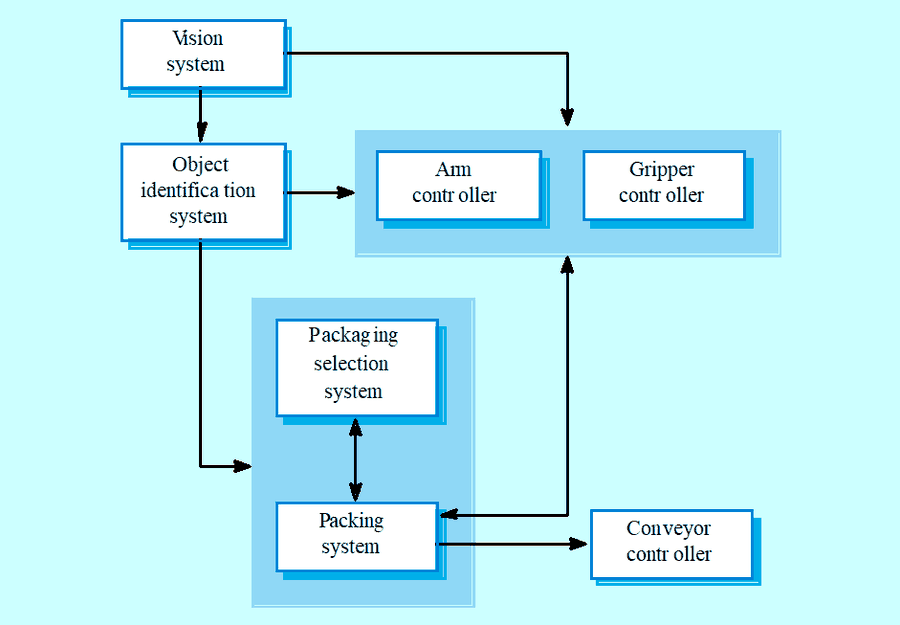
- Mimari genelde kutu ve çizgilerle çizilir. Bu diyagramlar çok soyuttur: bileşenler arasındaki ilişkinin türünü ve alt sistemlerin dışarıdan görünen özelliklerini göstermez.
- Yine de paydaşlarla iletişimde ve proje planlamasında faydalıdır.
S8Mimari tasarım kararları
Mimar şu 8soruyu cevaplar:
- Kullanılabilecek genel (generic) bir uygulama mimarisi var mı?
- Sistem nasıl dağıtılacak?
- Hangi mimari stiller uygun? → organizasyon stilleri
- Sistemi yapılandırmak için hangi yaklaşım kullanılacak?
- Sistem modüllere nasıl ayrıştırılacak? → modüler ayrıştırma
- Hangi kontrol stratejisi kullanılmalı? → kontrol stilleri
- Mimari tasarım nasıl değerlendirilecek?
- Mimari nasıl belgelenecek?
S9–S10Mimari stiller ve mimari modeller
- Bir sistemin mimari modeli genel bir mimari modele ya da stile uyabilir. Stilleri bilmek mimariyi tanımlamayı kolaylaştırır.
- Ama büyük sistemlerin çoğu heterojendir, tek bir stile uymaz.
- Mimariyi belgelemek için 5model:
- Statik yapısal model: ana sistem bileşenlerini gösterir.
- Dinamik süreç modeli: sistemin süreç yapısını gösterir.
- Arayüz modeli: alt sistemlerin arayüzlerini tanımlar.
- İlişki modeli: alt sistemler arası ilişkiler, ör. veri akışı modeli.
- Dağıtım modeli: alt sistemlerin bilgisayarlara nasıl dağıtıldığını gösterir.
S11–S19Sistem organizasyonu
Sistem organizasyonu, sistemi yapılandırmak için kullanılan temel stratejiyi yansıtır. Yaygın 3organizasyon stili: ortak veri deposu, ortak hizmetler ve sunucular (istemci-sunucu), soyut makine (katmanlı).
S12–S14Ortak veri deposu modeli Repository
- Alt sistemler veri alışverişi yapmak zorundadır. Bunun 2yolu var:
- Ortak veri merkezi bir veritabanında, yani depoda tutulur ve bütün alt sistemler erişir.
- Her alt sistem kendi veritabanını tutar ve veriyi diğer alt sistemlere açıkça gönderir.
- Büyük miktarda veri paylaşılacaksa en çok depo modeli kullanılır.
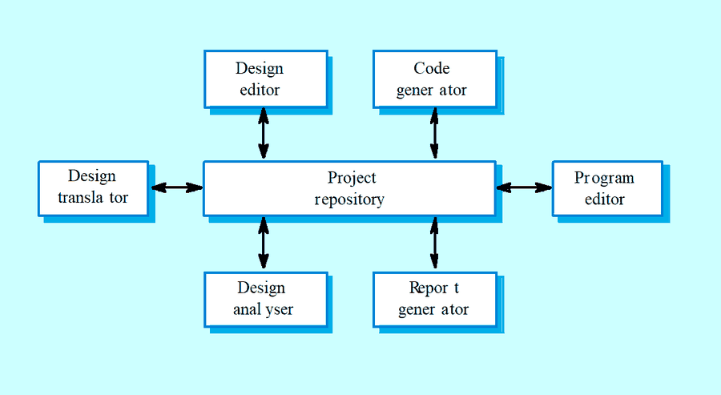
Avantajları
- Büyük miktarda veriyi paylaşmanın verimli yolu.
- Alt sistemler verinin nasıl üretildiğiyle ilgilenmez.
- Merkezi yönetim: yedekleme, güvenlik vb.
- Paylaşım modeli depo şeması olarak yayınlanır.
Dezavantajları
- Alt sistemler tek bir depo veri modelinde anlaşmak zorunda; bu kaçınılmaz olarak bir uzlaşmadır.
- Veri evrimi (modeli değiştirmek) zor ve pahalı.
- Alt sisteme özel yönetim politikalarına yer yok.
- Verimli şekilde dağıtmak zor.
S15–S17İstemci-sunucu modeli Client-server
- Veri ve işlemin birçok bileşene nasıl dağıtıldığını gösteren dağıtık sistem modelidir. 3parçası var:
- Yazdırma, veri yönetimi gibi belirli hizmetleri veren bağımsız sunucular,
- Bu hizmetleri çağıran istemciler,
- İstemcilerin sunuculara erişmesini sağlayan ağ.
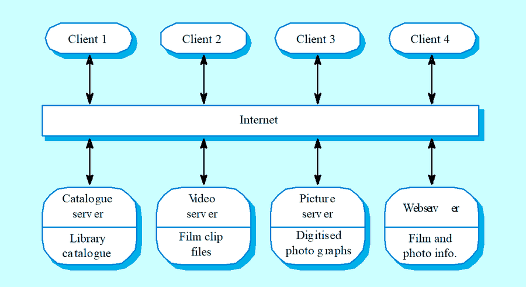
Avantajları
- Veriyi dağıtmak kolay.
- Ağdaki sistemleri etkin kullanır; daha ucuz donanım yetebilir.
- Yeni sunucu eklemek ya da var olanı yükseltmek kolay.
Dezavantajları
- Ortak veri modeli yok; alt sistemler veriyi farklı düzenler, veri alışverişi verimsiz olabilir.
- Yönetim her sunucuda tekrarlanır.
- Merkezi isim ve hizmet kaydı yok; hangi sunucu ve hizmetlerin olduğunu bulmak zor olabilir.
S18–S19Soyut makine (katmanlı) model Abstract machine / layered
- Alt sistemlerin arayüzlerini modellemek için kullanılır.
- Sistemi, her biri bir hizmet kümesi sunan katmanlara (soyut makinelere) ayırır.
- Farklı katmanlardaki alt sistemlerin artımlı geliştirilmesini destekler. Bir katmanın arayüzü değişince sadece komşu katman etkilenir.
- Kitaptan, dezavantajı: sistemi katmanlara ayırmak her zaman kolay değil; üst katmandaki bir istek birçok katmandan geçmek zorunda kalınca performans düşebilir.
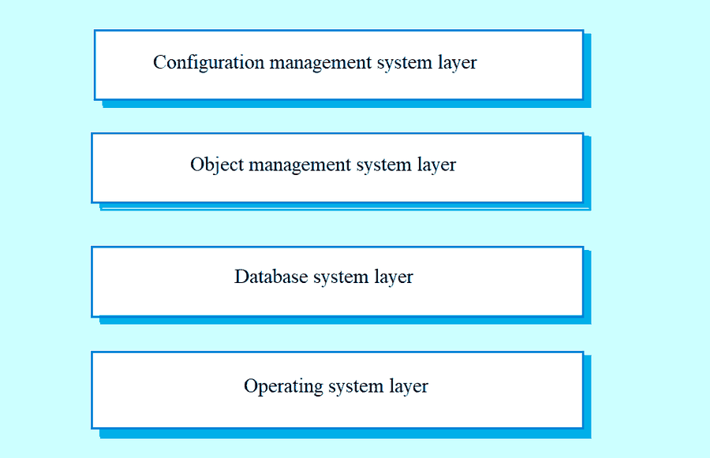
S20–S28Modüler ayrıştırma stilleri
- Alt sistemleri modüllere ayırma stilleridir. Sistem organizasyonu ile modüler ayrıştırma arasında kesin bir ayrım yoktur.
- Alt sistem: çalışması diğer alt sistemlerin hizmetlerinden bağımsız olan, kendi başına bir sistemdir. Modül: diğer bileşenlere hizmet veren ama normalde ayrı bir sistem sayılmayan bileşendir.
- Modüler ayrıştırma bir alt yapı seviyesidir: alt sistemler modüllere ayrılır. 2model:
- Nesne modeli: sistem etkileşen nesnelere ayrılır.
- Boru hattı (veri akışı) modeli: sistem, girdileri çıktılara dönüştüren fonksiyonel modüllere ayrılır.
- Mümkünse eşzamanlılık (concurrency) kararları modüller gerçekleştirilene kadar ertelenmelidir.
S23–S25Nesne modelleri
- Sistem, iyi tanımlı arayüzleri olan gevşek bağlı nesnelere ayrılır.
- Nesne yönelimli ayrıştırma; nesne sınıflarını, özelliklerini ve işlemlerini belirlemekle ilgilenir.
- Gerçekleştirmede nesneler bu sınıflardan oluşturulur ve nesnelerin işlemlerini koordine etmek için bir kontrol modeli kullanılır.
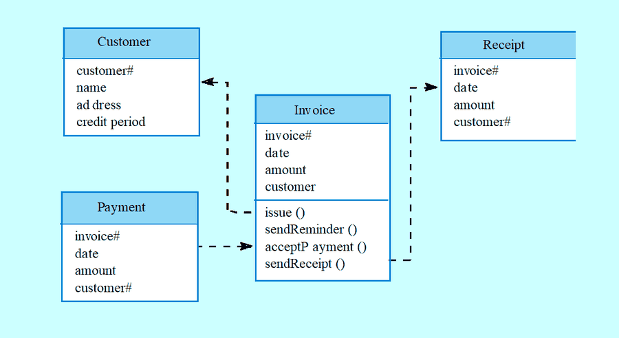
Avantajları
- Nesneler gevşek bağlı; bir nesnenin gerçekleştirmesi diğerlerini etkilemeden değiştirilebilir.
- Nesneler gerçek dünyadaki varlıkları yansıtabilir.
- Nesne yönelimli diller yaygın.
Dezavantajları
- Nesne arayüzü değişince sorun çıkabilir.
- Karmaşık varlıkları nesne olarak göstermek zor olabilir.
S26–S28Fonksiyon yönelimli boru hattı Pipeline / pipe and filter
- Fonksiyonel dönüşümler girdilerini işleyip çıktı üretir. Boru ve filtre modeli de denir (UNIX kabuğundaki gibi).
- Bu yaklaşımın türleri çok yaygındır. Dönüşümler sıralıysa buna toplu sıralı (batch sequential) model denir; veri işleme sistemlerinde çok kullanılır.
- Etkileşimli sistemlere pek uygun değildir.
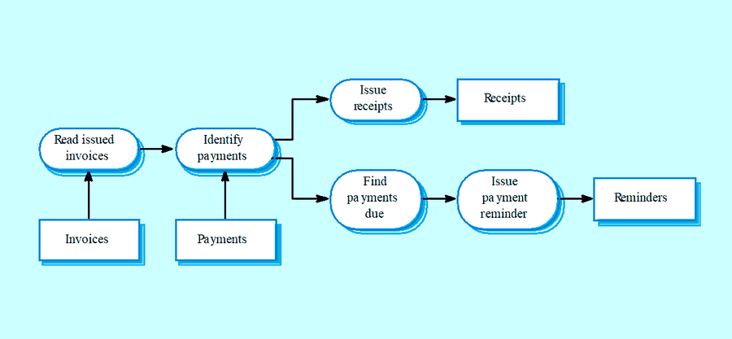
Avantajları
- Dönüşümlerin yeniden kullanımını destekler.
- Sezgisel yapı, paydaşlarla iletişim kolay.
- Yeni dönüşüm eklemek kolay.
- Eşzamanlı ya da sıralı sistem olarak gerçekleştirmek görece basit.
Dezavantajları
- Boru hattı boyunca veri aktarımı için ortak bir format gerekir.
- Olay tabanlı etkileşimi desteklemek zor.
S29–S37Kontrol stilleri
- Kontrol stilleri, alt sistemler arasındaki kontrol akışıyla ilgilenir. Sistemin ayrıştırma modelinden farklı bir konudur.
- Merkezi kontrol: bir alt sistem bütün kontrolden sorumludur; diğer alt sistemleri başlatır ve durdurur.
- Olay tabanlı kontrol: her alt sistem, diğer alt sistemlerden ya da sistemin ortamından gelen dış olaylara cevap verebilir.
S30–S32Merkezi kontrol: çağır-dön ve yönetici modeli
Bir kontrol alt sistemi, diğer alt sistemlerin çalışmasını yönetme sorumluluğunu alır.
- Çağır-dön modeli (call-return): yukarıdan aşağıya alt yordam modeli. Kontrol alt yordam hiyerarşisinin en üstünden başlar ve aşağı iner. Sıralı sistemlere uygulanabilir.
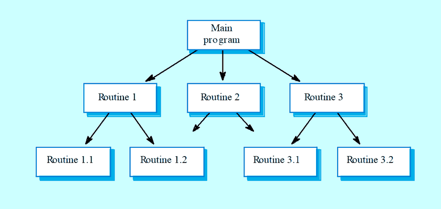
- Yönetici modeli (manager): eşzamanlı sistemlere uygulanabilir. Bir sistem bileşeni, diğer sistem süreçlerinin başlatılmasını, durdurulmasını ve koordinasyonunu kontrol eder. Sıralı sistemlerde bir case ifadesi olarak da gerçekleştirilebilir.
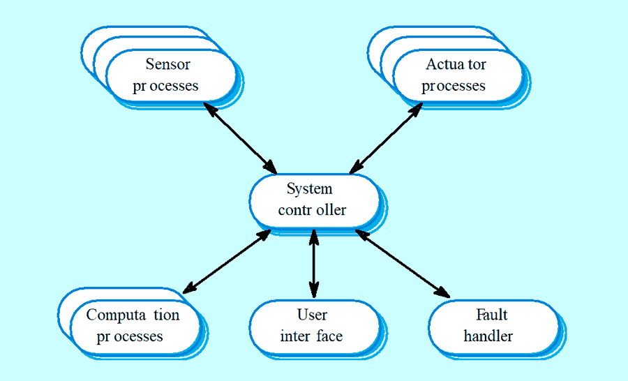
S33–S37Olay güdümlü sistemler: yayın ve kesme güdümlü model
Dışarıdan üretilen olaylarla çalışır; olayın zamanlaması, onu işleyen alt sistemlerin kontrolünde değildir. 2temel model var. Tablolama programları (spreadsheet) ve üretim sistemleri (production systems) de olay güdümlü modellerdir.
- Yayın modeli (broadcast): olay bütün alt sistemlere yayınlanır; olayı işleyebilen herhangi bir alt sistem işler.
- Ağdaki farklı bilgisayarlarda bulunan alt sistemleri birleştirmede etkili.
- Alt sistemler belirli olaylara ilgi kaydeder. Bu olaylar olunca kontrol, olayı işleyebilecek alt sisteme geçer.
- Kontrol politikası olay ve mesaj işleyiciye gömülü değildir; hangi olaylarla ilgileneceğine alt sistemler karar verir.
- Ama alt sistemler bir olayın işlenip işlenmeyeceğini ya da ne zaman işleneceğini bilmez.
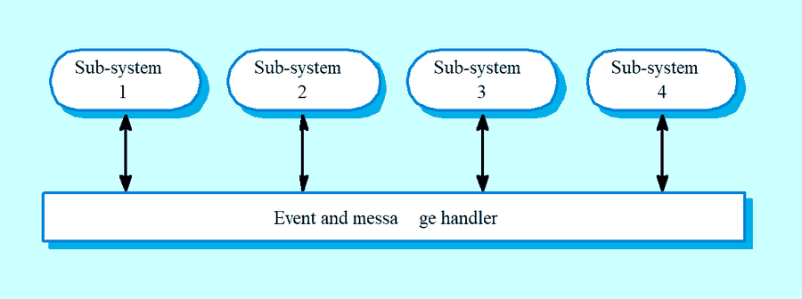
- Kesme güdümlü model (interrupt-driven): olaya hızlı cevabın şart olduğu gerçek zamanlı sistemlerde kullanılır.
- Bilinen kesme türleri vardır ve her tür için bir işleyici (handler) tanımlıdır.
- Her tür bir bellek adresiyle ilişkilidir; donanım anahtarı kontrolü o türün işleyicisine aktarır.
- Hızlı cevap sağlar, ama programlaması karmaşık ve doğrulaması zordur.
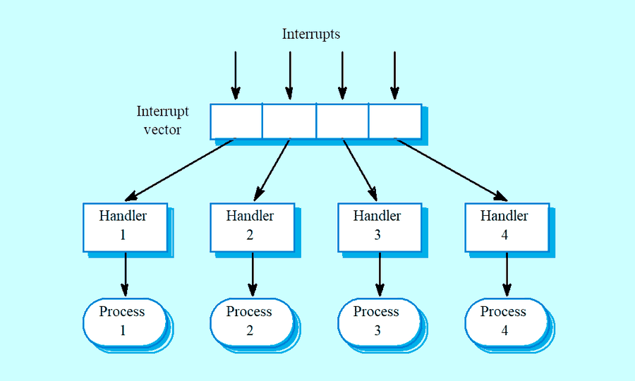
Hangi sistem için hangi kontrol?
| Sistem | Kontrol modeli | Tek cümlelik neden |
|---|---|---|
| Sıralı işlem | Çağır-dön (merkezi) | İşler sırayla yapılır, kontrol ana programdan aşağı iner. |
| Eşzamanlı süreçler | Yönetici (merkezi) | Bir denetleyici süreçleri başlatır, durdurur, koordine eder. |
| Dağıtık | Yayın (olay tabanlı) | Ağdaki farklı bilgisayarlardaki alt sistemleri birleştirmede etkili. |
| Gerçek zamanlı | Kesme güdümlü (olay tabanlı) | Olaya hızlı cevap şart; kesme doğrudan işleyiciye gider. |
S38–S40Referans mimariler
- Mimari modeller bir uygulama alanına özgü olabilir. Alana özgü 2tür model var:
- Genel (generic) modeller: birçok gerçek sistemden çıkarılmış soyutlamalardır, bu sistemlerin temel özelliklerini taşır. Aşağıdan yukarıya (bottom-up) modellerdir.
- Referans modeller: daha soyut, idealleştirilmiş modellerdir. O sistem sınıfı hakkında bilgi verir ve farklı mimarileri karşılaştırmayı sağlar. Yukarıdan aşağıya (top-down) modellerdir.
- Referans modeller mevcut sistemlerden değil, uygulama alanının incelenmesinden çıkarılır. Gerçekleştirmeye temel olarak ya da sistemleri karşılaştırmak için kullanılabilir; sistemlerin değerlendirildiği bir standart gibidir.
- OSI modeli, iletişim sistemleri için katmanlı bir referans modelidir.
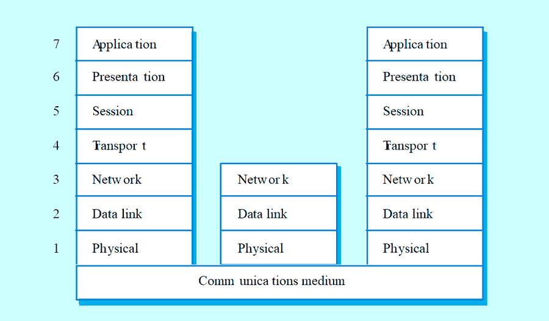
Sayılı liste
| Sayı | Liste | Öğeler |
|---|---|---|
| 3 | Açık mimarinin avantajları | Paydaş iletişimi · sistem analizi · büyük ölçekli yeniden kullanım |
| 5 | Mimariyi belirleyen sistem özellikleri | Performans · güvenlik · emniyet · kullanılabilirlik · bakım kolaylığı |
| 8 | Mimari tasarım kararları | Genel mimari · dağıtım · stil · yapılandırma yaklaşımı · modüllere ayrıştırma · kontrol stratejisi · değerlendirme · belgeleme |
| 5 | Mimari modeller | Statik yapısal · dinamik süreç · arayüz · ilişki (veri akışı) · dağıtım |
| 3 | Organizasyon stilleri | Ortak veri deposu · istemci-sunucu · soyut makine (katmanlı) |
| 3 | İstemci-sunucunun parçaları | Sunucular · istemciler · ağ |
| 2 | Modüler ayrıştırma modelleri | Nesne modeli · boru hattı (veri akışı) |
| 2+2 | Kontrol stilleri | Merkezi: çağır-dön, yönetici · Olay tabanlı: yayın, kesme güdümlü |
| 2 | Alana özgü mimari modeller | Genel (aşağıdan yukarı) · referans (yukarıdan aşağı) |
Slaytların kendisi
Sistemi gör, stili seç
Her kartta bir sistem tarifi var. Hangi organizasyon stilini ya da hangi kontrol modelini önereceğini seç; nedenini hemen görürsün. Birden çok cevap savunulabiliyorsa hepsi yeşil yanar. Sınavda bunun gerekçesini yazacaksın, açıklamaları da oku.